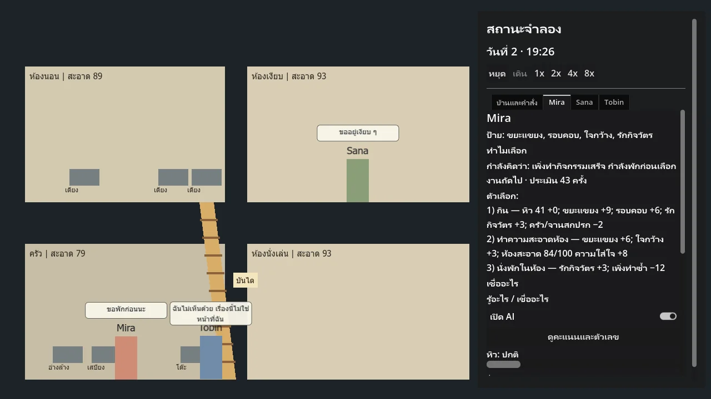
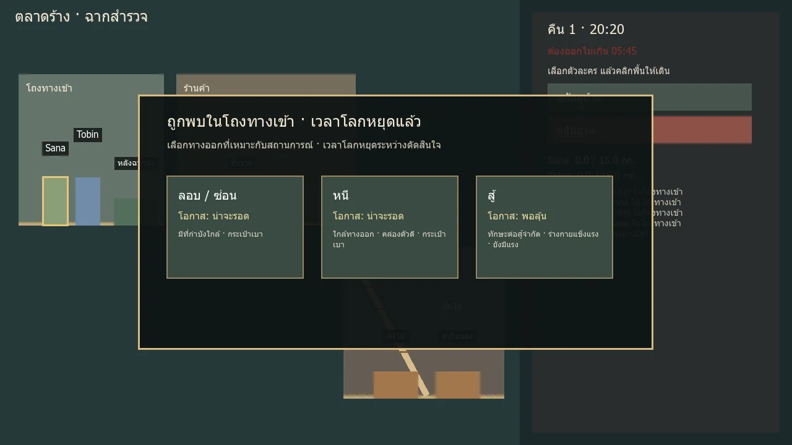

Mygame
An early Godot prototype of a survival and resource-management game where characters have realistic, finely customisable behaviour.
In short: An early Godot game prototype where characters’ personalities drive what happens. I designed it; AI wrote the code — two small working prototypes, not a finished game.
- Year
- Year 4, Term 1 (2026)
- Team / role
- Solo — game design
- Tools
- Godot
- Status
- prototype two small working Godot prototypes

Problem
If AI-driven characters handle everything themselves, the player has nothing left to play. The game needs living characters and a real job for the player at the same time.
What I decided
- Survival basics (eat, sleep, rest) stay simple and reliable, like This War of Mine / Sheltered.
- Managing is the player’s job.
- Personalities create the story. Character traits drive relationships and events; otherwise the AI would do everything and leave the player nothing to play. 22 traits in the prototype, 100+ planned.
Result
Two small working Godot prototypes (AI characters; injury & exploration) with automated tests. Not a finished game.
Gallery


My role vs AI
Me: the game design, including the three decisions above. AI: Codex wrote the Godot code from my work orders; Claude Code planned and checked tests and screenshots. I decided the design and judged every result.